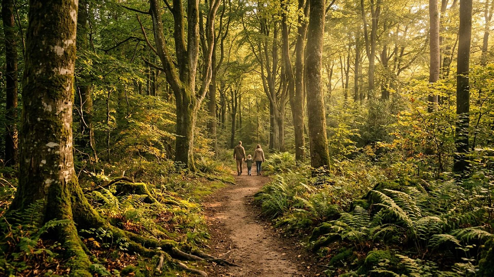

L'essentiel
environ 30 minutes · 6 salles
Pour une première visite : un aperçu de chaque grande échelle, du cosmos à l'humain.
Accueil → Parcours de visite
Trente minutes, une heure et demie ou une visite en famille : trois parcours pour découvrir le musée, et des pistes d'activités pour les enseignants.

Trois façons de visiter
Chaque salle peut se visiter seule. Ces parcours proposent un ordre et une durée indicative ; les durées dépendent bien sûr du temps passé sur les interactions et l'audioguide.
environ 30 minutes · 6 salles
Pour une première visite : un aperçu de chaque grande échelle, du cosmos à l'humain.
environ 1 heure 30 · 15 salles
Le fil complet des grandes questions, avec les interactions principales.
environ 45 minutes · 7 salles
Des salles très visuelles, avec des manipulations simples et des chiffres faciles à retenir.
Pour les enseignants et animateurs
Le musée s'adresse aux visiteurs de 12 ans et plus. Ces pistes s'appuient sur des interactions qui fonctionnent au clavier, sans connexion après la première visite, et sans aucune collecte de données.
Plan complet